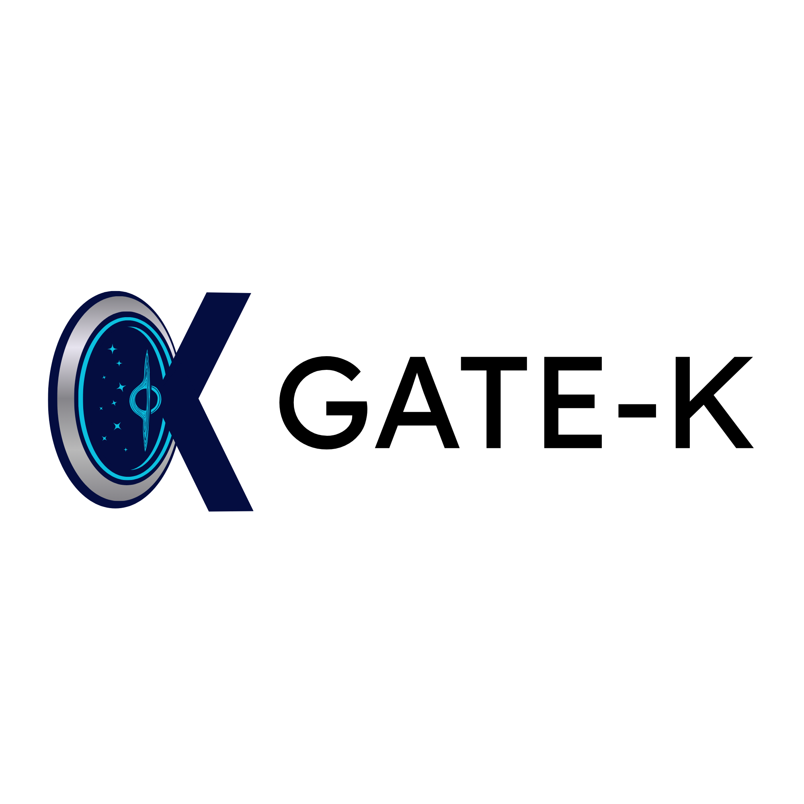
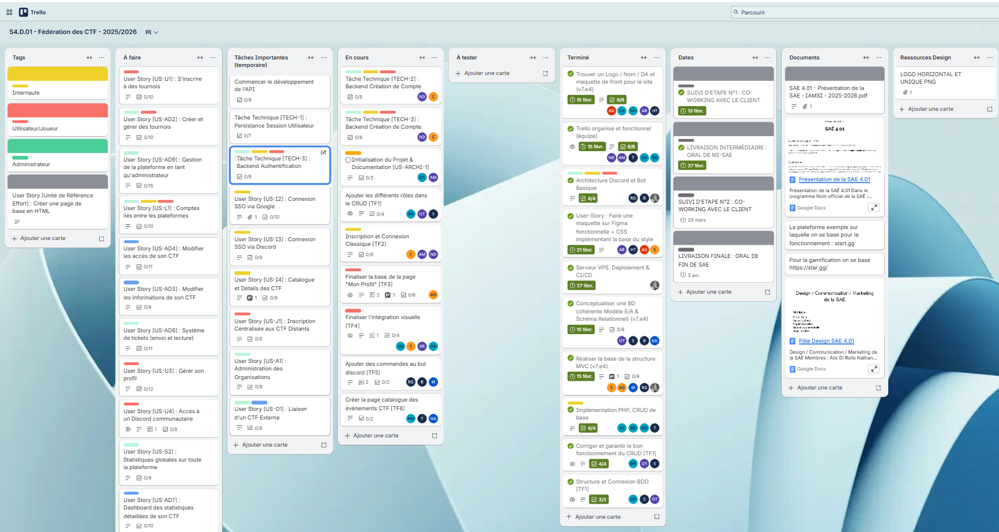

Projet 4 : Gate K (toujours en cours)
Lien GitLab : https://gitlabinfo.iutmontp.univ-montp2.fr/iamsi-sae-401/siteweb
Projet réalisé dans le cadre de la SAE 4.01 – Intégration d'une application et gestion de projet. L'objectif de cette SAE est de concevoir une plateforme permettant de centraliser différents CTF (Capture The Flag) sur un seul site. Cette plateforme permettra aux joueurs de consulter les événements disponibles, de s’y inscrire, de consulter les résultats et d’accéder à des fonctionnalités communautaires.
Contexte
Durée : du 30 janvier 2026 au 3 avril 2026
Participants : 20 étudiants (classe entière)
Projet : travail collaboratif réparti en sous-groupes dans le cadre de la SAE 4.01.
Le projet consiste à créer une plateforme permettant de regrouper plusieurs CTF déjà existants. Chaque CTF possède son propre site et son propre serveur. L’objectif est donc de rajouter une couche supplémentaire permettant de gérer les inscriptions, les résultats et des fonctionnalités supplémentaires (classements, statistiques, gamification) sans modifier le fonctionnement des CTF existants.
La plateforme doit être stable, sécurisée, maintenable et modulaire. Pour cela, le projet est structuré autour d’une architecture permettant d’ajouter des fonctionnalités sous forme d’extensions.
Organisation du projet
L’organisation du projet repose sur trois rôles principaux :
- Chef de projet : responsable de l’organisation globale et de la coordination.
- Consultant technique : responsable des choix techniques et de l’architecture.
- Product Owner / Responsable Qualité : rôle que j’occupe dans ce projet.
En tant que Product Owner et Responsable Qualité, je participe également au développement technique du projet, principalement sur la partie backend.
Rôle et responsabilités
- Gestion du backlog et rédaction des User Stories.
- Organisation et suivi du projet via Trello.
- Communication entre les différentes parties prenantes (client, développeur, chef de projet et consultant technique) via email ou Discord.
- Participation aux décisions avec le chef de projet et le consultant technique.
- Contrôle qualité : identification et remontée des erreurs, vérification du travail produit.
- Participation au développement backend de la plateforme.
Contributions techniques
- Développement de la partie CRUD et interactions avec la base de données.
- Participation à la conception de la base de données (MariaDB normalisée).
- Contribution à la conception de l’architecture MVC.
- Développement de fonctionnalités backend en PHP.
- Participation à la conception de l’interface administrateur.
Technologies utilisées
- HTML / CSS
- PHP
- SQL – Base de données MariaDB
- JavaScript (prévu pour certaines fonctionnalités front)
- Trello pour la gestion de projet
- Discord pour la communication
Compétences acquises
Compétences techniques
- Conception d'une architecture web basée sur le modèle MVC.
- Développement backend avec PHP et SQL.
- Conception et normalisation d’une base de données relationnelle.
- Gestion d’un projet web impliquant plusieurs modules et fonctionnalités.
Compétences humaines
- Coordination et communication avec une équipe de grande taille.
- Organisation et priorisation des tâches dans un projet complexe.
- Mise en place d’un cadre de travail structuré dès le début du projet.
- Gestion de la qualité du travail produit et suivi des livrables.
Conclusion
Ce projet m’a permis de développer mes compétences en gestion de projet, en architecture web et en développement backend. Le fait de travailler au sein d’une équipe de grande taille m’a également permis de renforcer mes capacités de communication, de coordination et de management.
Cette expérience m’a aussi appris l’importance d’une organisation rigoureuse, d’une communication claire entre les différents rôles du projet et d’un suivi qualité constant afin de garantir la cohérence et la fiabilité du travail produit.
Visuels du projet
Logo du projet

Capture du Trello
